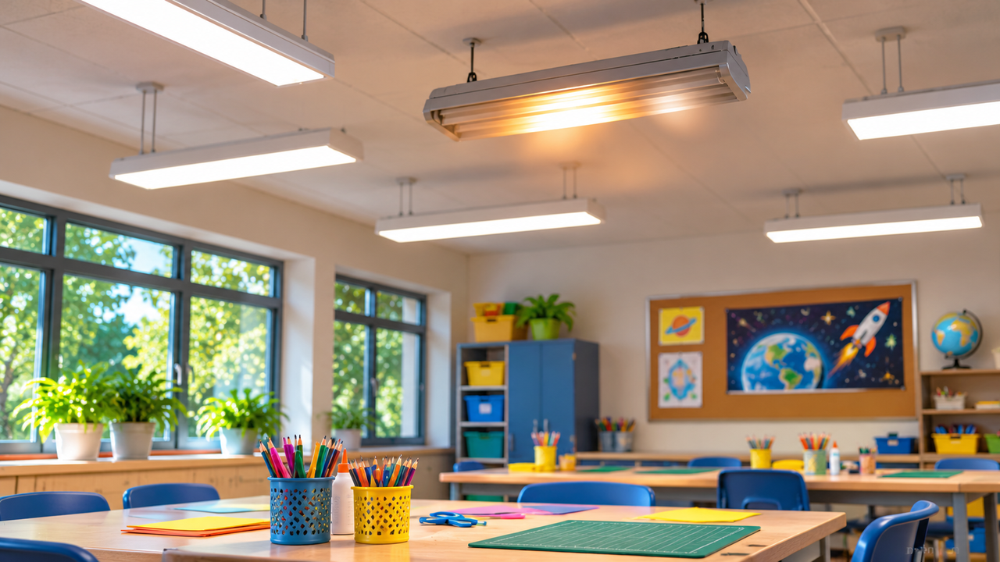

اكتشاف الأعطال
الضوء في الصفّ
الوميض اختفى تمامًا حين وصل الفاحص

صفّ هيلة
تركت هيلة البالغة عشر سنوات شريطًا بنفسجيًّا على ملصقها. فجأة بدا لها أغمق بكثير. رفعت عينيها: وحدة الإضاءة فوق طاولة الإبداع ومضت، انطفأت لحظة ثم عادت لتضيء. وبقيّة الأضواء في الصفّ واصلت العمل.
«هل رأيتم؟» سألت. أومأ بعض الأطفال وآخرون لم يلاحظوا أصلًا. أبعدت المعلّمة المجموعة عن الموضع المشبوه وأبلغت مسؤول الصيانة. وحين وصل كان الضوء يبدو سليمًا تمامًا.
العطل الذي لا يبقى
طلب مسؤول الصيانة ترك الموضع بلا استخدام حتّى الفحص المهنيّ. أوضح أنّه لا يُلمس جسم الإضاءة أو الأسلاك أو المفاتيح لمحاولة إعادة إنتاج العطل. بدل ذلك طلب أن يرووا بدقّة ما رُئي ومتى.
في اليوم التالي، حين عمل التلاميذ على طاولات أخرى، رأت هيلة من بعيد الركن نفسه يومض مرّة أخرى. هذه المرّة حدث ذلك بعد دقائق من بدء الحصّة. الرسوم نفسها لم تتغيّر، لكن الضوء الذي تُرى من خلاله تغيّر.
«هذا يحدث دائمًا في حصّة الفنّ»، قالت صديقة. كادت هيلة توافق — لكنّها الحصّة التي يكون فيها الجميع في الصفّ وينظرون إلى هذا الركن. لعلّه في أيّام أخرى لا يوجد من يلاحظ.
ذكّرت المعلّمة أنّ المساعدة في توضيح العطل ممكنة فقط عبر مراقبات من مكان آمن. «حدث الأمر في حصّة الفنّ» ليست هي «حصّة الفنّ سبّبته».
شيء يتغيّر خلال اليوم
في الأيّام التي يُستخدم فيها الصفّ وقتًا طويلًا تلاحظ هيلة أنّ الوميض يظهر أكثر. وفي يوم بلا حصص في المكان لم يتلقَّ مسؤول الصيانة بلاغًا جديدًا.
لكن هذا الارتباط لا يثبت مصدر المشكلة. فعدد الأشخاص ومدة الاستخدام وساعات اليوم تتغيّر أيضًا، ولذلك يصعب معرفة أيّ تفصيل مهمّ.
لماذا نحتاج معلومات منظّمة
تريد المعلّمة إضاءة ثابتة كي يتعلّم التلاميذ بأمان. ويحتاج مسؤول الصيانة أن يعرف أيّ وحدة إضاءة تتطلّب فحصًا ومتى تحدث الظاهرة. وصف مثل «يحدث أحيانًا» لا يكفي لإعادة إنتاج الحالة.
تقترح هيلة تسجيل الساعة ومدّة الحدث والمنطقة التي لوحظ فيها الوميض. وهي لا تحاول تحديد أيّ مكوّن كهربائيّ معطوب، لأنّ هذا فحص للبالغين المؤهّلين.
رصد واحد مضلّل
في الحدث التالي كانت هيلة متأكّدة أنّ الضوء انطفأ وقتًا طويلًا، بينما رأت صديقة وميضًا قصيرًا. وقفتا في مكانين مختلفين. لعلّهما لم تريا الشيء نفسه بالضبط، ولعلّ الذاكرة تأثّرت بالمفاجأة.
ومرّة أخرى نقل ثلاثة أطفال أوقاتًا مختلفة قليلًا. نظر أحدهم إلى ساعة الحائط بعد الوميض فقط؛ وآخر لم يكن متأكّدًا في أيّ دقيقة حدث الأمر. تفهم هيلة أنّ القياس الجيّد يبدأ بتعريف متّفق عليه لما يُوثَّق، وليس بذاكرة لحظة مفاجئة فقط.
تفهم أنّ بلاغ «حدث مرّة أخرى» لا يكفي لوصف عطل قصير. ينبغي أيضًا معرفة من رأى، ومن أيّ نقطة، وما الذي تغيّر بالضبط. تبقى الأحجية مفتوحة، لكن الأسئلة الآن أفضل بكثير.
ما المعروف وما الذي ما زال مجهولًا
من المعروف أيّ وحدة إضاءة معنيّة، وأنّ الظاهرة ليست ثابتة، وأنّ بقيّة الصفّ تبقى مضاءة. وغير معروف ما الذي يسبّب الانقطاعات، وهل هناك نمط زمنيّ، أو إن كانت الظاهرة تتعلّق بظروف استخدام معيّنة.
تريد هيلة التمييز بين المعلومات التي يمكن للأطفال توثيقها من بعيد وبين الفحوصات التي يجب أن يقوم بها مسؤول الصيانة بنفسه.
قبل أن نبتكر
يفهم التلاميذ أنّه ليس كلّ عطل يظهر في فحص واحد. أحيانًا يبدأ فهمه بتوثيق متّسق لمتى يحدث، وكم يستمرّ، وما يحدث حوله.
كيف تعرّفون «حدثًا» يمكن عدّه؟ وكيف تميّزون بين عطل مرّة واحدة ونمط متكرّر؟ وأيّ معلومات تساعد مسؤول الصيانة من دون تشجيع التلاميذ على الاقتراب من الكهرباء؟
تلميح من عالم الفضاء
تُراقب أنظمة المركبات الفضائيّة عبر قياسات كثيرة. وقد يشير تغيّر غير معتاد في قياس إلى حاجة للتوضيح، لكن لفهمه ينبغي الجمع بين الزمن والسياق وقياسات إضافيّة.
بعد القراءة — في ورقة الفريق
تحدّثوا في الفريق وأجيبوا استنادًا إلى معلومات القصّة. إذا نقصت معلومة، اكتبوا سؤالًا للمتابعة.
- من تريدون مساعدته في القصّة؟
- ماذا يحاول أن يفعل وما الذي يصعّب عليه ذلك؟
- ما الذي يحتاج إلى أن يكون قادرًا على فعله؟
- ما الذي تريدون معرفته أيضًا قبل تطوير الأفكار؟